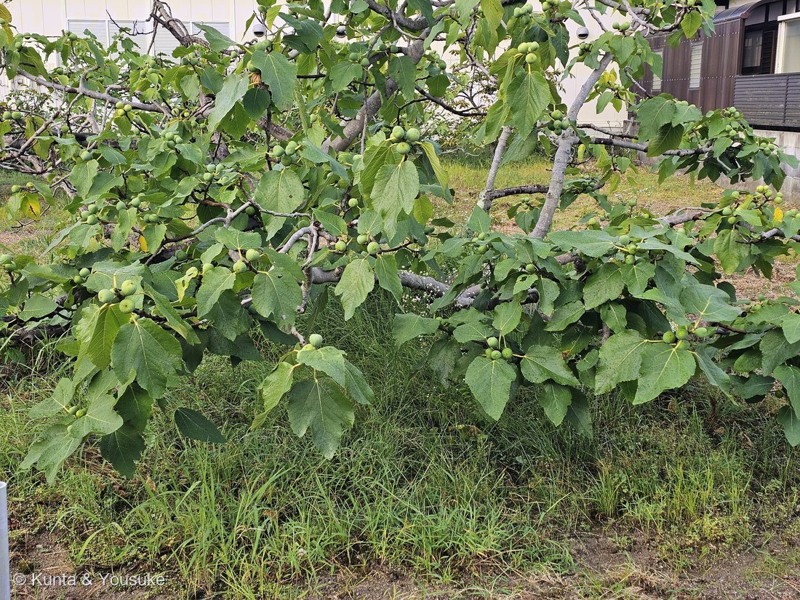

地図を読み込んでいるよ…
🔍 写真も地図も、押しているあいだ拡大して見られるよ（スマホは指を置いてすこし待ってね）。
🌍 の地図＝この子がもともと自生している場所を緑に。アラビア半島南部〜地中海東部（西アジア）。日本へは江戸時代に渡来。
日本へは江戸時代に来た子だから、日本は塗っていないよ。
⚠ 地図は国（日本と中国だけ県・省）までしか塗れないから、ほんとうの分布より広く見えていることがあるよ。地図はだいたいの場所。正確なところは、上の文を見てね。
イチジク（無花果）
Ficus carica L.
別名 · トウガキ（唐柿） ／ 品種は特定不可（日本の栽培は単為結果性の雌株が主）
クワ科 · Moraceae（イチジク属）── この図鑑で初めての科
燻太さんの言葉「おっきな手のような葉っぱのこの子。実はなってなかったから、今度見つけたら追加しようね」……その「実」に、いちばんの秘密がある。実は、実の中が全部“花”。
名前と学名の由来 ── carica＝名産地カリア
- ⭐属名 Ficus は、ラテン語で「イチジク」。種小名 carica は、イチジクの名産地カリア（小アジア）から。──「イチジク、それも名産地の」という名前だね。
見立て「手のような葉っぱ」＝そのとおり
- 葉は手のひら状に3〜5裂する大きな葉。表はざらざら（細かい突起＝シストリスと毛のせいで、紙やすりのよう）。葉柄が長く、切ると白い乳液（クワ科の特徴。⚠かぶれることがある）。
- ⭐この葉こそ「イチジクの葉（fig leaf）」＝アダムとイブが身を隠した、あの葉。手のような形は世界じゅうで知られている。
- ⚠この株には、実はまだなっていなかった（燻太さんの観察どおり）。→ ⭐一年ちかくたって、実のなった木に会えた（写真②・いちばん下の節）。
⭐⭐⭐ 「無花果」のなぞ ── 実は、実の中が全部“花”
- イチジク＝漢字で「無花果」＝「花の無い果」。でも花が無いわけじゃない。花が見えないだけなんだ。
- ⭐⭐あの丸い“実”は、じつは袋。名前を「花嚢（かのう）」といって、その袋の内側に、小さな花が何百も咲いている。——花は、実の中で、内向きに咲いている。だから外から花が見えない＝「無花果」。
- ⭐花が咲き終わると、袋は「果嚢」と名を変えて、それが“実”になる。——つまりイチジクの“実”は、そもそも「花の入れ物」。そして食べたときのプチプチが、本当の果実（花ひとつずつが結んだ小さな実）。
- → 🎭「見た目と正体がちがう」の小道へ。050 ヒマワリ・043 イチゴ・035 フェンネルで「見た目は種／実は果実」の話をしてきたけれど、イチジクは「見た目は実／正体は“花のかたまり”」＝この小道でいちばん思いきった一手。⚠ただし、その決定的な証拠＝花嚢の中の花は、まだ写せていない。⭐実そのものには、一年後に会えた（写真②・下の節）。でも「割って、中の花を見る」約束は、まだ残っている。
⭐⭐ だれが受粉させるのか ── 蜂を体の中で育てる木／でも日本の食用は「虫いらず」
- ⭐野生のイチジクは、イチジクコバチという体長2mmほどの小さな蜂と、世界で最も精巧な共生をしている。蜂は花嚢の先端の小さな穴から中へ入り、花のあいだで産卵し、花粉を運んで受粉させ、一生の大半を実の中で暮らす。イチジクの種類ごとに、専用の蜂がいる（1種の木に1種の蜂）。
- ⭐⭐でも、日本で栽培・流通するイチジクは、受粉しなくても実がふくらむ「単為結果（たんいけっか）」の品種（雌株。8割が'桝井ドーフィン'）。イチジクコバチは日本にほとんどいないのに、ちゃんと実がなるのは、このため。⚠だから私たちが食べるイチジクの中に、蜂は入っていない。
- ⭐単為結果＝受粉・受精なしに実がなる＝燻太さんの研究のトマト（001）でも大事なテーマ。種のできない 053 シャガとはまた別の「実り方／ふえ方」（イチジクは挿し木でよくふえる）。「実」と「受粉」と「種」の関係を、この一本がぜんぶ持っている。
⭐⭐ 一年ごしの約束 ── 実が、なっていた
- 2026年7月27日の夕方、燻太さんの帰り道で、実のなったイチジクの木に会えた（写真②）。⚠①の株とは別の木だよ。それでも、「実がなっていたら写真を足そう」の約束は、これで半分ほどけた。
- ⭐実は、枝に沿って、葉のわきにひとつずつ。自分の柄をほとんど持たず、枝に直接すわっている。──これが「秋果（あきか）」の付きかた＝その年に伸びた新梢が伸びながら、葉腋（葉のつけね）に次々と実がつくられていく。
⭐もうひとつの「夏果」は付き方がちがう＝前年に伸びた枝の葉腋にできていた実のもと（原基）が、冬をこして春から初夏にふくらむもの。だから写真②に並んでいるのは、この夏に生まれた秋果の列。 - ⭐⭐そして、実のてっぺんに、小さな茶色い点のくぼみがある（拡大するとよく見える）。──これが「目（め）」＝花嚢のたったひとつの入口（ostiole）。野生のイチジクで、イチジクコバチが中へもぐりこむ、あの穴だよ。「花が見えない実」の、外から見えるただひとつの手がかりが、ここに写っていた。
- 7月末で、実はまだかたい緑色。⭐秋果は着果からおよそ80〜90日で、8月下旬から10月下旬にかけて、表面が緑から赤紫へ変わって熟す。──この実たちは、まだ途中。これから色がつく。
- ⭐枝が地面すれすれを、横へまっすぐ流してあるでしょう。あれは「一文字仕立て（一文字整枝）」＝主枝を水平の支柱に誘引する仕立て方で、収穫の作業が早くすみ、風の害を受けにくいのがいいところ。日本のイチジク栽培では桝井ドーフィンが広く普及していて、この仕立てとよく組み合わされる。⚠ただし品種は、写真からは決められない。
- ⚠⭐葉の顔が、①とちがう。①の株は指のように深く5つに裂けた葉、②の木は浅く3裂した、丸みのある大きな葉。──イチジクの葉は「3裂のことも、ふつうは5裂、裂けないことすらある」ほど幅があって、しかも長く伸びる枝の葉のほうが、実をつける枝の葉より大きく、深く裂けると書かれている。写真①はぐんぐん伸びる若い株、②は実をつけている枝＝この説明とちゃんと向きが合う。⚠ただし別々の木だから、これで「同じ木でも変わる」を確かめたことにはならない（品種のちがいかもしれない）。いつか、一本の木の中で見くらべたい。
- ⚠まだ残っている約束＝花嚢の中。この実を割って、内側を向いて咲いている何百もの花を、この目で見ること。──熟すころ、もういちど会いに行こうね。
参考：マイナビ農業「初心者でも失敗しないイチジク剪定のコツ」（夏果＝前年に伸びた枝につくタイプで、その枝の葉腋に形成されていた果実の原基が春から初夏にかけて肥大する／秋果＝その年に伸びた新梢につくタイプで、枝が伸長しながら葉腋に次々と果実が形成される／夏果は枝先に近い位置から上から下へ、秋果は枝元側から下から上へ順に収穫していく）／JA埼玉中央「いちじくの栽培について（桝井ドーフィンの一文字仕立て）」（収穫時期は8月下旬〜10月下旬／着果から収穫までは80〜90日間／果実の表面が緑色から赤紫色に変化する）／奈良県「イチジクづくりのポイント」（桝井ドーフィンが広く普及している／植え付け1年目の夏に添え木をして誘引し、2年目の春に水平の支柱に主枝を誘引して樹形を整える／この整枝法は最も労力を要する収穫時の作業が早く、風害を受け難い）／Van den Berk Nurseries「Ficus carica」（葉は掌状に裂け、3裂のこともあり、ふつうは5裂で深く切れこみ、裂けないこともある／長く伸びる枝（long shoots）に沿う葉は、花をつける枝（flowering shoots）に沿う葉より大きく、深く裂ける）／Wayne's Word「Gall Flowers In Figs」（イチジクの“実”は花嚢（syconium）＝内側に無数の小さな雄花・雌花をつける、裏返しの花序／小さな雌の蜂が花嚢の開口部（ostiole）から入って受粉させ、産卵する／栽培品種には受粉のいらない単為結果性のものがある）